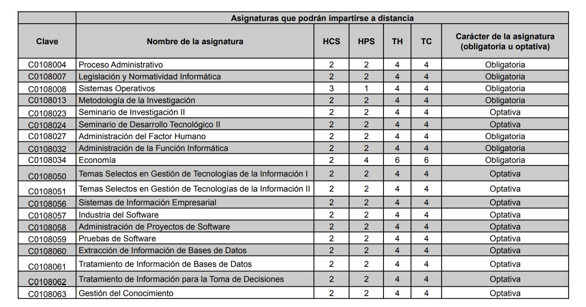

Herramienta de Apoyo al Tutor
Inicio
Información Referente
Maya Curricular
Trayectorias Académicas
Trayectoria 4 años y medio
Trayectoria 5 años
Trayectoria 7 años
Información Referente a la Carrera
Límite de Créditos
Asignaturas Comunes
Asignaturas NO ofertadas en Ciclo Corto
Asignaturas a Distancia
Asignaturas en Inglés y Español
Asignaturas Optativas
Campos Laborales y Seminario de Titulación
Requisitos de Egreso
